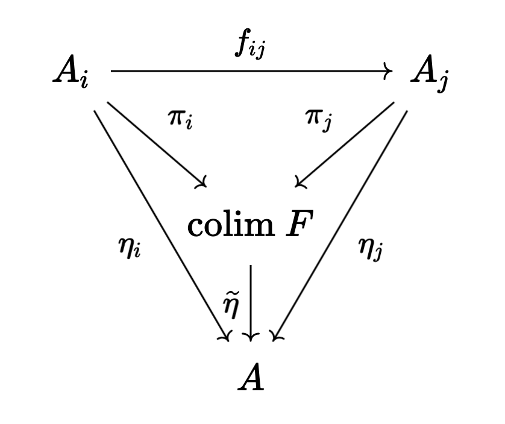

Seifert-Van Kampen for fundamental groupoids
Table of Contents
Originally posted
1. Introduction
I'm in the process of trying to learn homotopy theory: an area of mathematics which is very categorical in its flavour. Unfortunately, all of the algebraic topology I have learned up until this point has been from texts which are sparing in their use of the modern, categorical language (Munkres and Hatcher). To fix my deficiencies, I have been going back and re-reading some of the foundational results, formulated in the modern way (using the texts of May and tom Dieck).
The goal of this piece is to go through the details of the proof of Seifert-Van Kampen theorem for fundamental groupoids, following the book of May, and from this derive as a corollary the classical Seifert-Van Kampen theorem. We will do the derivation in "categorical" terms, and then bring this language down to Earth later (something which isn't done in much detail in May's text).
2. Categorical preliminaries
Given a topological space \(X\), the fundamental groupoid \(\Pi(X)\) is defined to be the category with the points of \(X\) as objects, and paths between points as arrows. It is easy to see that \(\Pi(X)\) is, in fact, a groupoid (i.e. a category with reversible arrows). Note that given \(x \in X\), \(\text{Mor}(x, x) \simeq \pi_1(X, x)\), the fundamental group (this is also easy to see). Let us briefly review some categorical terminology:
Definition (Skeleton). Given cateogry \(\mathcal{C}\), we define \(\text{sk}(\mathcal{C})\), a skeleton of \(\mathcal{C}\), to be a full subcategory with objects consisting of one object from each isomorphism class in \(\mathcal{C}\). Note that in a groupoid, if there is an arrow between objects, there is an isomorphism between them. It follows that in \(\Pi(X)\), there is exactly one isomorphism class of objects corresponding to each path component of \(X\). Moreover, if \(X\) is path-connected, so there is a single isomorphism class, it is clear that \(\pi_1(X, x)\) is a skeleton of \(\Pi(X)\) for any \(x \in X\).
Proposition. If \(\mathcal{C}\) is a category and \(\text{sk}(\mathcal{C})\) is a skeleton, then these are equivalent categories.
Proof. Let \(J : \text{sk}(\mathcal{C}) \rightarrow \mathcal{C}\) be the inclusion functor. We define functor \(F : \mathcal{C} \rightarrow \text{sk}(\mathcal{C})\) as follows: we \(a \in \text{Obj}(\mathcal{C})\) to \(F(a)\), the element in the skeleton which is isomorphic to \(a\). For each \(a \in \text{Obj}(\mathcal{C})\), pick some isomorphism \(j_a : a \rightarrow F(a)\). In the case that \(a \in \text{Obj}(\text{sk}(\mathcal{C}))\), so \(F(a) = a\), take \(j_a = \text{id}\). We then define for \(f \in \text{Mor}(a, b)\) the arrow \(F(f) \in \text{Mor}(F(a), F(b))\) to be \(F(f) = j_b \circ f \circ j_a^{-1}\). It is easy to see that \(F\) is a functor. Moreover, it is clear that \(FJ\) is the identity. We require natural transformation \(JF \simeq \text{Id}_{\mathcal{C}}\). For some \(a \in \text{Obj}(\mathcal{C})\), take
The moral of this categorical digression is to emphasize that fundamental groups and fundamental groupoids are equivalent in a nice way, and as a result, it makes sense that the SvK theorem for fundamental groupoids will yield the SvK theorem for fundamental groups.
Definition (\(\mathcal{D}\) -shaped diagram in \(\mathcal{C}\)). Is a functor \(F : \mathcal{D} \rightarrow \mathcal{C}\), where \(\mathcal{D}\) is a small category. We can define a category of \(\mathcal{D}\) -shaped diagrams, in \(\mathcal{C}\), denoted \(\mathcal{D}[\mathcal{C}]\) by taking arrows to be natural transformation of functors.
Definition (Colimit).
Example. The whole point of colimits is to extract the underlying essence (universal property) which uniquely determine algebraic direct limits. In particular, suppose we take our small category \(\mathcal{D}\) to be a directed set \(I\) with preorder \(\leq\) (where we also have upper-bounds on pairs). In other words, \(\text{Obj}(\mathcal{D}) = I\), and there is an arrow from \(x\) to \(y\) if \(x \leq y\). Transitivity and reflexivity ensure that these arrows define a valid category. On the other hand, suppose \(\mathcal{C}\) is some "algebraic category" (i.e. \(\textbf{Grp}\) or \(\textbf{Ring}\) or something similar). Suppose we have some collection of objects \(A_i \in \mathcal{C}\) for each \(i \in I\) and we have an arrow for each \(i \leq j\), \(f_{ij} : A_i \rightarrow A_j\) such that \(f_{ii} = \text{id}\) and \(f_{ik} = f_{jk} \circ f_{ij}\) if \(i \leq j \leq k\). We then can define a \(\mathcal{D}\) -shaped diagram over \(\mathcal{C}\) as \(F(i) = A_i\) for \(i \in I\) and \(F(i \rightarrow j) = f_{ij}\). By nature of how we chose the morphisms in \(\mathcal{C}\), checking that this is a functor is trivial.
Note that if \(A\) is some object in \(\mathcal{C}\), any morphism of diagrams \(\eta : F \rightarrow \underline{A}\) is a collection of arrows \(\eta_j : A_j \rightarrow A\) for each \(j \in I\). It follows that \(\text{colim} \ F\) is some object in \(\mathcal{C}\) and morphisms \(\pi_j : A_j \rightarrow \text{colim} \ F\), such that if \(\eta_j : A_j \rightarrow A\) is another collection of morphisms with \(A \in \text{Obj}(\mathcal{C})\), then there is a unique morphism \(\widetilde{\eta} : \text{colim} \ F \rightarrow A\) making the following diagrams commute:

To prove that such a colimit exists, which in this context we call a direct limit, we can just write it down. In particular, take
\begin{equation} \text{colim} \ F = \bigsqcup_{j \in I} A_j \Big/ x_i \sim x_j \ \text{iff} \ f_{ki}(x_i) = f_{kj}(x_j) \ \text{for some} \ k \end{equation}and take morphisms \(\pi_j : A_j \rightarrow \text{colim} \ F\) to simply be maps taking elements to their corresponding equivalence class. It is easy to check that \(\text{colim} \ F\) is well-defined, and that the morphisms \(\pi_j\) respect the algebraic structure of \(\mathcal{C}\) (depending on what \(\mathcal{C}\) is). To show that this construction satisfies the universal property, note that if we have morphisms \(\eta_j : A_j \rightarrow A\), we can take \(\widetilde{\eta}(\pi_i(x_i)) = \eta_i(x_i)\). To see that such a map is well-defined, suppose \(x_j \sim x_i\), so we have \(f_{jk}(x_j) = f_{ik}(x_i)\) for some \(k\) where \(i, j \leq k\). Then
\begin{equation} \eta_j(x_j) = \eta_k(f_{jk}(x_j)) = \eta_k(f_{ik}(x_i)) = \eta_i(x_i) \end{equation}Checking that this is a valid morphism in the category follows from the fact that the \(\eta_i\) are. Finally, this is clearly the unique morphism which makes the diagrams commute, simply by nature of how we have defined it, so we have proved existence of direct limits. Because colimits satisfy a universal property, it follows that the direct limit is unique up to unique isomorphism.
Definition (Limit).
Example. Similar to colimits, limits are defined via the universal property of algebraic inverse limits.
Proposition.
3. Groupoid Seifert-Van Kampen
Theorem (Groupoid Seifert-Van Kampen).
4. From abstract nonsense to calculations
We need to